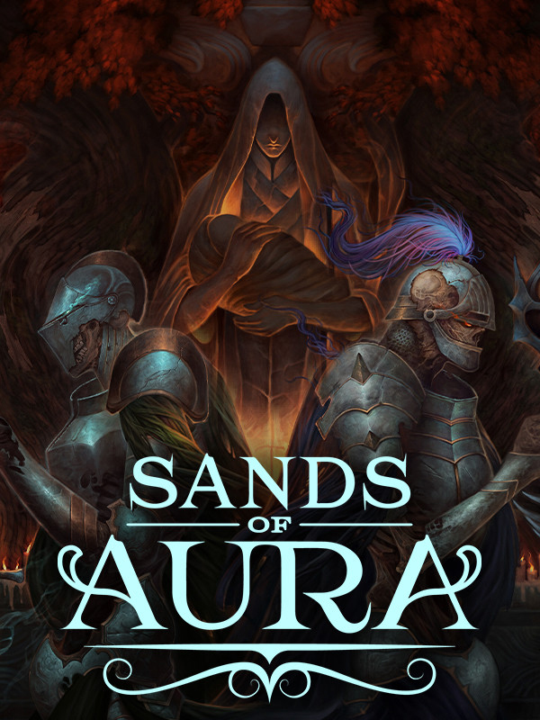

Sands of Aura
Sands of Aura
Details
|  | |
| Playtime | Not Played |
| Last Activity | Never |
| Added | 2/6/2025 22:46:44 |
| Modified | 4/11/2025 20:24:19 |
| Completion Status | Not Played |
| Library | Epic |
| Source | Epic |
| Platform | Epic Games |
| Release Date | 10/28/2023 |
| Community Score | |
| Critic Score | |
| User Score | |
| Genre | Action Indie RPG |
| Developer | Chashu Entertainment |
| Publisher | Freedom Games |
| Feature | Single-Player |
| Links | Steam Official Epic Discord Twitch GOG |
| Tag | [GGDeals] Synced |
Description


A ruinous cataclysm unleashed by a tormented god descended the world of Talamhel into perpetual night. The hourglass of time was shattered and its essence poured across the land, creating an endless sea of sand. The once-flourishing world of Talamhel became a putrid lesion of its former glory and those who called it home are now husks of corruption--violent, undying, unyielding soldiers of death.
But Talamhel is not lost--not yet. For generations, the righteous few have endured. You are one of those few.
On the eve of your induction into the Order of Remnant Knights, the last protectors of man, Talamhel is once-again wracked by calamity. The corruptive nature of the Night Plague has mutated, and the realm of man needs the Remnant Knights more than ever.
Track down the emergent evil and destroy it. Protect the realm of man.


 From the helm of your nimble grainwake, carve across the perilous sandseas to confront the source of this newfound terror, but don’t expect a guiding light or a red X on a map. You’ll chart your own course forward--behold the open seas, and choose the heading you best see fit.
From the helm of your nimble grainwake, carve across the perilous sandseas to confront the source of this newfound terror, but don’t expect a guiding light or a red X on a map. You’ll chart your own course forward--behold the open seas, and choose the heading you best see fit.
But familiarity is a far-flung concept aboard the grainwake--the shifting sands are always changing, revealing secrets, dangers, and paths unseen. Things are not as they seem…
Talamhel is an open world, free to explore and discover as you please.
Every island is a unique, colorful encounter of combat, lore, and plunder.
With tiered levels of difficulty, locations offer challenges that will reward those who overcome.
With a trusted (undead) companion rested in the crow’s nest, you’ll never sail the seas alone.

 The corruption that plagues Talamhel has created a horde comprised of both man and other Talamhelic natives: The venerable Ferrum and the insectoid, hive-minded Hashara. Once warring nations have become an abominable army of undying malice.
The corruption that plagues Talamhel has created a horde comprised of both man and other Talamhelic natives: The venerable Ferrum and the insectoid, hive-minded Hashara. Once warring nations have become an abominable army of undying malice.
From doomsday cultists to fallen kings, the foes that guard the answers you seek are determined to see your end. Prepare for an unrelenting, unforgiving combat experience not to be taken lightly. Swing true, dear knight, swing true.
With hundreds of weapon components to be reclaimed from the crumbled remains of civilization, there are thousands of unique weapons to be forged. Find the hilt that fits just right.
Cleave through the corruption with 7 distinct fighting styles.
Bolster yourself with dozens of armor sets, each with their own unique defenses.
Combine and modify your devastation with magical augments, creating a personalized build.


Starspire is the sanctuary that you call home, and its doors remain open to those you deem worthy of its hearth. Along your journey, you will encounter refugees in need of shelter and a Remnant Knight can see they find it in Starspire.
Each person deserving of Starspire will make their new home stronger and safer, but not all are deserving.
Working as an optional companion to core gameplay, Starspire offers an opportunity to test your Remnant traits of leadership and judgment. The choices you make regarding Starspire’s residents will alter your story and affect your fate, as well as the fate of others--but only if you choose to make those choices.
New Starspire residents unlock perks like gifts of exclusive equipment and unique services.
Discover the lives of others, their choices and actions, and decide their fate.
Engage with characters unlike any you’ve ever met, and rebuild a community.
Decisions not easily made: become familiar with the grey area between right and wrong.
 The symphony of the sands are brought to life with an evocative, soul-stirring soundtrack composed and produced by the incredible Eduardo Lopez.
The symphony of the sands are brought to life with an evocative, soul-stirring soundtrack composed and produced by the incredible Eduardo Lopez.
Sands of Aura will feature a fully symphonic soundtrack, with a wide selection of instrumentation--from the haunting strings of the antique Viola Da Gamba to the resonant thunders of a professional Bulgarian choir.
These are the unforgettable sounds of Talamhel. The score of a wounded world.